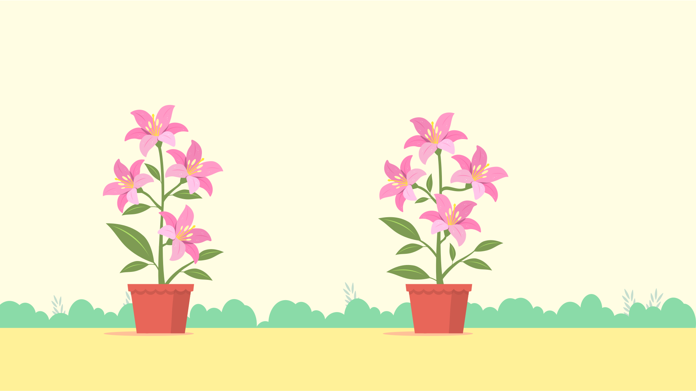
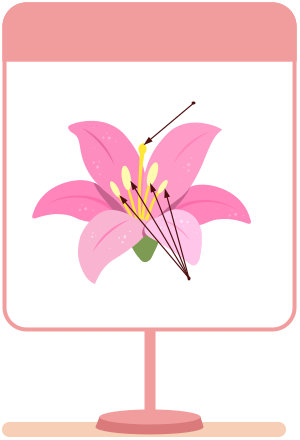

Self-pollination or Cross-pollination?
b4_wg163_261019_01

Index Stigma (Pistil) Anthers (Stamens)Pollination is the transfer of pollen grains from the anther of the stamen to the stigma of the pistil of flower(s).
Self-pollination occurs when pollen is transferred from the anther to the stigma of the same flower or another flower on the same plant.
Cross-pollination occurs when pollen is transferred from the anther of a flower on one plant to the stigma of a flower on a different plant of the same species.
Bees are important pollinating agents that carry pollen grains from one flower to another while collecting nectar.
Pollination is the first step in fertilisation and helps flowering plants produce seeds and fruits.